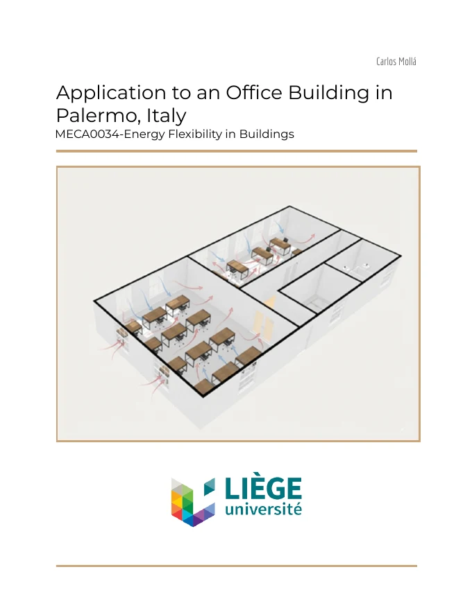

01 / 07
Sin climatización
Simulación pasiva del edificio, sin equipos activos, para conocer su comportamiento térmico de partida.
El interior llega a 45 °C en verano y baja a 9 °C en invierno.
Diseñé desde cero y simulé hora a hora durante un año completo la instalación de climatización de un edificio de oficinas de 200 m² en Palermo (Italia): unidad de tratamiento de aire, fancoils a cuatro tubos y bomba de calor reversible. El objetivo era acercar el edificio al consumo casi nulo sin renunciar al confort térmico.
Asignatura «Energy Flexibility in Buildings»
Palermo tiene inviernos templados y veranos calurosos: con el año meteorológico tipo (TMY), la temperatura exterior oscila entre 2,1 °C y 33,5 °C, con una humedad relativa media del 74,7 %. La deshumidificación es, por tanto, una parte esencial del diseño.
Antes de dimensionar ningún equipo simulé el edificio sin climatización. En verano el interior llegaba a 45 °C, por encima incluso de la temperatura exterior, y en invierno bajaba a 9 °C. La mayor parte de las horas quedaban fuera de las categorías de confort térmico aceptables, lo que confirmaba la necesidad de un sistema activo en ambas estaciones.
Selecciona un componente para ver cómo lo modelé. Cambia de estación para ver cómo se adapta el sistema.
Con el sistema completo funcionando todo el año como caso base, evalué una a una distintas medidas de operación y de envolvente. Después combiné las más eficaces en un escenario final. Los costes son anuales, con un precio medio de la electricidad en Italia de 0,35 €/kWh.
Simulación pasiva del edificio, sin equipos activos, para conocer su comportamiento térmico de partida.
El interior llega a 45 °C en verano y baja a 9 °C en invierno.
La categoría 4, la de mayor disconfort, domina en todas las zonas. Era imprescindible climatizar en ambas estaciones.
Entre el 60 y el 65 % de las horas en categoría 4, según la zona.
Con la unidad de tratamiento de aire y el caudal higiénico, la humedad queda controlada, pero el aire de ventilación no basta para cubrir las cargas sensibles.
La temperatura máxima interior baja de 45 °C a 35 °C.
Al añadir los fancoils, las cargas sensibles de cada zona quedan cubiertas y el confort se mantiene casi todas las horas. Esto validó el tamaño de 10 kW de la bomba de calor.
Consumo base de 4.869 kWh eléctricos y 1.704 € al año.
Combinando apagado fuera de horario, control solar y bomba de calor, el confort en horas de uso se mantiene dentro de las categorías aceptables.
2.729 kWh al año y 955 € de coste: un 44 % menos que el caso base.
La unidad de tratamiento de aire elimina 1.878 litros de agua al año. La demanda se concentra en verano, coincidiendo con los meses de mayor humedad específica.
Pico en agosto: 851 litros en el mes y hasta 53 litros en un solo día.
En el escenario final, el compresor de la bomba de calor concentra la mayor parte del consumo y los ventiladores el resto.
Compresor 2.128 kWh (78 %) y ventiladores 602 kWh (22 %).
Ocupación y ventilación según ASHRAE 62.1, evaluación del confort por categorías de confort térmico y envolvente basada en el estudio de D’Agostino et al. (2019) para edificios de oficinas en el clima mediterráneo.
El diseño debería verificarse frente al Decreto de requisitos mínimos (DM 26/06/2015) y calcular las prestaciones energéticas según la UNI/TS 11300, junto con la UNI EN 16798-1 para ventilación y ambiente interior.
En España, la misma instalación se regiría por el Reglamento de Instalaciones Térmicas en los Edificios (RITE) y por el Documento Básico de Ahorro de Energía del Código Técnico (CTE DB-HE).
El paso natural sería trasladar esta instalación a un modelo BIM para coordinar conductos, tuberías y equipos con la arquitectura y conectar el modelo con la simulación energética. Es la metodología en la que quiero formarme a continuación.
Es un escenario idealizado: supone un uso correcto y constante de las protecciones solares y no incluye las pérdidas de distribución en tuberías y conductos ni el consumo de bombas y válvulas, que suelen añadir entre un 10 y un 15 % al consumo real.

Informe de la simulación HVACPDF en inglés, 25 páginas